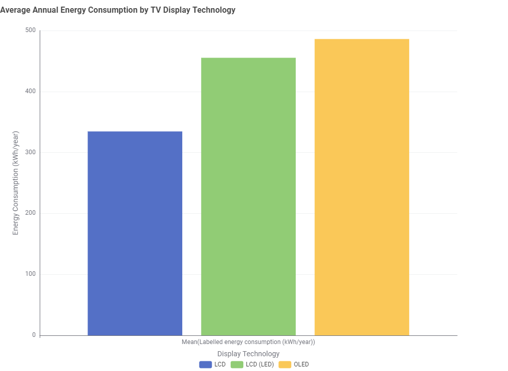

TV Energy Consumption Storyboard
Exploring television energy consumption through data visualisation for young adults who want to better understand the types of displays they use.
Story 1: Does Display Technology Affect Energy Consumption?
Different television display technologies can have different levels of annual energy consumption.
The visualisation below compares the average labelled annual energy consumption of LCD, LCD (LED) and OLED televisions in the dataset.

What does the data show?
In this dataset, LCD televisions have the lowest average annual energy consumption among the three display technologies shown.
LCD (LED) televisions have a higher average energy consumption, while OLED televisions have the highest average annual energy consumption in this comparison.
This suggests that display technology may be one factor associated with differences in television energy use.
Story 2: Does TV Screen Size Affect Energy Consumption?
Screen size is another factor that may influence how much energy a television consumes.
This section will use an earlier analysis comparing television screen-size categories and their average energy consumption.
Story 2 visualisation will be added here.
What does the data show?
The findings and explanation for the second visualisation will be added after the chart has been finalised.